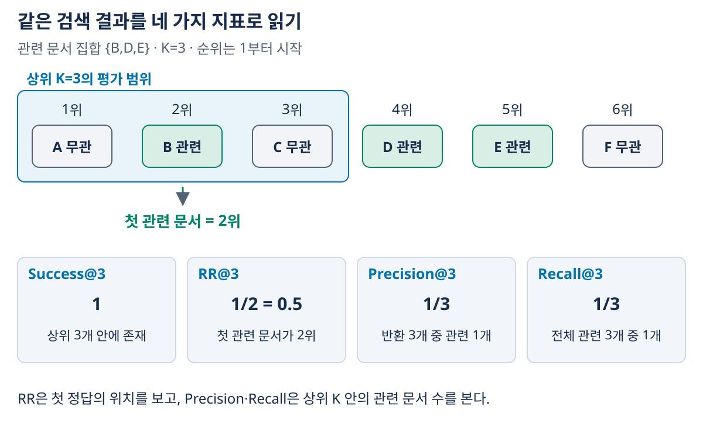
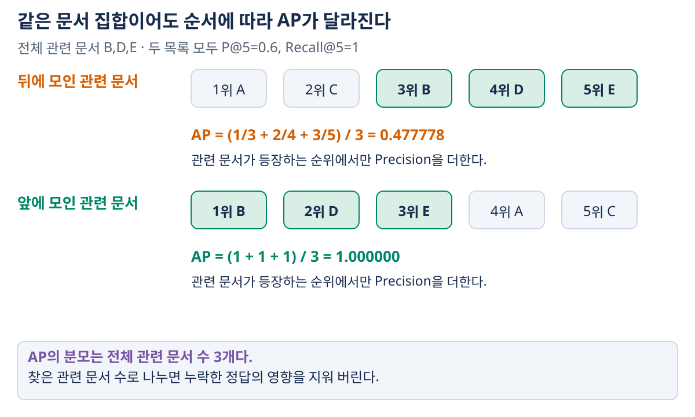

03. 검색 평가지표
이전: TF-IDF와 BM25 · 학습 안내 · 다음: 신경검색과 검색기 학습
검색 점수가 높다는 이유만으로 검색기가 좋은지 알 수는 없다. 사람이 관련 있다고 판단한 문서를 어느 순위에서 얼마나 찾았는지를 평가해야 한다. 첫 정답을 빨리 찾는 목표, 노이즈를 적게 반환하는 목표, 필요한 문서를 빠짐없이 찾는 목표는 다르다.
1. 평가의 입력·출력
입력은 질의별 순위 목록과 관련성 라벨이다. 출력은 질의별 지표 및 여러 질의의 평균이다. BM25 점수, cosine 점수, 모델의 확신도는 관련성 라벨을 대신하지 않는다.
| 기호 | 정의 |
|---|---|
| $q$ | 하나의 질의 |
| $d_i$ | 검색 결과의 $i$위 문서, 순위는 1부터 시작 |
| $rel_i$ | $d_i$가 관련 문서이면 1, 아니면 0 |
| $R_q$ | corpus 전체에서 $q$와 관련 있다고 정의된 문서 집합 |
| $r=\lvert R_q\rvert$ | 전체 관련 문서 수 |
| $K$ | 평가할 상위 결과 수 |
| $h_K=\sum_{i=1}^{K}rel_i$ | 상위 $K$개 안에서 찾은 관련 문서 수 |
먼저 문서 ID를 중복 없이 반환한다고 가정한다. 같은 문서·같은 근거를 반복 반환해 hit 수를 부풀리면 안 된다. RAG에서는 평가 단위가 문서인지 청크인지, 같은 사실을 담은 다른 청크도 정답인지 정해야 한다.
2. 하나의 결과를 여러 관점으로 읽기
문서 A~F가 다음 순서로 반환되었다고 하자. 전체 관련 문서는 B·D·E의 3개다.
| 순위 $i$ | 반환 문서 | $rel_i$ | 누적 관련 수 | Precision@$i$ |
|---|---|---|---|---|
| 1 | A | 0 | 0 | 0 |
| 2 | B | 1 | 1 | $1/2$ |
| 3 | C | 0 | 1 | $1/3$ |
| 4 | D | 1 | 2 | $2/4$ |
| 5 | E | 1 | 3 | $3/5$ |
| 6 | F | 0 | 3 | $3/6$ |
상위 3개에 첫 관련 문서는 있지만 나머지 관련 문서는 아직 없다. 그래서 ‘관련 문서가 하나라도 있는가’에는 성공해도 ‘모두 찾았는가’에는 부족하다.

그림 읽기: 파란 테두리 안은 평가 깊이 K=3이며 관련 문서는 B 하나다. RR의 분모는 B의 순위 2, Precision의 분모는 반환 슬롯 3, Recall의 분모는 전체 관련 문서 B·D·E의 수 3이다. 이 예제에서 Precision과 Recall의 값이 우연히 같아도 분모가 뜻하는 대상은 다르다.
3. Success@K와 RR·MRR: 첫 관련 문서
첫 관련 문서의 순위를 $r_{first}$라고 하자. 없으면 무한대로 생각한다.
위 예제에서 $r_{first}=2$이므로 $Success@3=1$, $RR@3=0.5$다. $K=1$이면 둘 다 0이다. $K=3$ 바깥의 관련 문서는 RR@3에 기여하지 않는다.
질의 집합 $Q$에서 평균하면 다음과 같다.
세 질의의 첫 관련 순위가 1·2·검색 실패이고 $K=3$이면 $MRR@3=(1+1/2+0)/3=0.5$다. 질의마다 문서 수를 가중해 평균하는 것이 아니라, 여기서는 질의 하나를 같은 무게로 평균한다.
Success는 ‘K 안에 존재하는가’, RR은 ‘그중 첫 문서를 얼마나 앞에 놓았는가’를 측정한다. RR=1이어도 첫 문서만 맞고 나머지가 모두 쓸모없을 수 있다. 또 multi-hop 질문처럼 둘 이상의 근거가 필요한 경우 첫 근거 하나만 찾아서는 답변에 충분하지 않을 수 있다.
4. Precision과 Recall: 노이즈와 누락
기본 예제의 상위 3개는 [A,B,C]이므로 $h_3=1$이다.
$K=5$이면 $Precision@5=3/5=0.6$, $Recall@5=3/3=1$이다. 관련 문서를 모두 찾았어도 노이즈 A·C가 섞여 precision은 1이 아니다.
| 보고 싶은 문제 | 먼저 볼 지표 | 해석의 한계 |
|---|---|---|
| 처음부터 유용한 결과가 나오는가? | RR·MRR | 뒤의 노이즈·추가 근거 누락을 모름 |
| 제한된 컨텍스트를 노이즈가 차지하는가? | Precision@K | 필요한 다른 근거가 corpus에 얼마나 더 있는지 모름 |
| 필요한 근거를 빠뜨리는가? | Recall@K | 관련 문서의 순서와 노이즈 양을 충분히 반영하지 못함 |
K를 늘리는 효과: 중복 없는 동일한 순위 목록에서 Recall@K는 줄어들지 않는다. Precision@K는 새 문서가 관련 있는지에 따라 오르거나 내린다. ‘더 많이 반환하면 검색이 무조건 좋아진다’고 결론내리지 않는다. RAG에서는 컨텍스트 길이·비용·생성기의 정보 활용 능력도 함께 바뀐다.
원하면 조화평균 $F1@K=2PR/(P+R)$을 사용할 수 있다. $P=R=0$이면 F1을 0으로 정의한다. F1은 precision·recall의 균형을 보여주지만 상위 K 안에서 관련 문서의 순서가 달라도 동일하다.
5. AP와 MAP: 모든 관련 문서의 순위를 반영하기
Average Precision(AP)은 관련 문서를 만나는 순위에서의 precision을 더한 뒤, 전체 관련 문서 수로 나눈다.
반환 목록 밖에 있는 관련 문서의 기여는 0이다. 기본 예제에서는 B·D·E가 2·4·5위에 있으므로 다음과 같다.
AP는 모든 순위의 precision을 무조건 평균하는 값이 아니다. 또 찾은 관련 문서 수만으로 나누면 못 찾은 관련 문서에 대한 누락 효과가 사라진다. 검색 결과가 [B] 한 개뿐이고 관련 문서가 3개라면, 이 정의의 AP는 $1/3$이지 1이 아니다.
여러 질의에 대해 $MAP=\frac1{|Q|}\sum_q AP(q)$를 계산한다. 모든 문서를 합쳐 하나의 precision을 계산하는 것과 다르다. 정의와 예제의 기준은 Introduction to Information Retrieval의 ranked evaluation 설명에서도 확인할 수 있다.
AP@K는 분모 규약을 반드시 쓴다
잘린 목록에서 이 교재는 다음 규약을 사용한다.
기본 예제의 AP@3은 $(1/2)/3=1/6$이다. 일부 평가 도구는 분모를 $\min(r,K)$로 둔다. $r=3,K=2$인 기본 예제에서는 교재 규약이 $1/6$이고, 이 변형은 $1/4$다. 같은 AP@K라는 이름만 보고 수치를 직접 비교하지 않는다. 평가 보고서에 수식·도구 설정을 함께 남긴다.
6. 순서만 바꾸면 무엇이 달라지는가?
관련 문서 B·D·E는 같고 상위 5개의 구성도 같다고 하자.
| 순위 목록 | RR@5 | P@5 | R@5 | AP@5: 분모 3 |
|---|---|---|---|---|
[A,C,B,D,E] |
$1/3$ | 0.6 | 1 | $(1/3+2/4+3/5)/3\approx0.477778$ |
[B,D,E,A,C] |
1 | 0.6 | 1 | $(1+1+1)/3=1$ |
precision·recall은 상위 K의 집합만 보므로 같다. RR·AP는 순서를 반영하므로 다르다. 이 예제는 ‘첫 문서 위치’와 ‘관련 문서 수’ 두 관점을 같은 조건에서 분리해 보여준다.

그림 읽기: 위·아래 목록은 관련 문서의 수가 같고 순서만 다르다. 녹색 칸에 도달하는 순위의 Precision만 더해 전체 관련 문서 수 3으로 나눈다. 무관 문서의 순위까지 모두 평균하거나, 찾은 문서 수만을 분모로 삼으면 다른 계산이 된다. 그림의 두 목록은 K=5 안에 관련 문서 세 개를 모두 포함한다.
등급 관련성과 nDCG
관련성 라벨이 0·1이 아니라 ‘매우 관련=2, 부분 관련=1, 무관=0’이라면 높은 등급을 앞에 두는 정도를 별도로 볼 수 있다. 한 가지 규약은 다음과 같다.
$g_i$는 관련성 등급이고 IDCG는 그 질의의 정답 등급을 이상적인 순서로 놓았을 때의 DCG다. gain을 $g_i$ 그대로 쓰는 정의도 있으므로 gain·discount·평가 깊이를 함께 명시한다. 이 지표는 모델 순위표의 숫자를 읽기 위한 보충이며, 이진 라벨의 Precision과 같은 값이 아니다.
모든 정답 gain이 0이어서 $IDCG@K=0$이면 비율이 정의되지 않는다. 평균에서 제외할지 0으로 포함할지 평가 규약을 정하고 해당 질의 수를 함께 보고한다.
7. 평가가 틀어지는 경계 조건
| 상황 | 이 교재의 처리 또는 확인할 규칙 |
|---|---|
| $K$보다 적게 반환 | 고정 깊이 P@K는 반환하지 못한 슬롯을 0으로 보아 $K$로 나눈다. 반환 개수로 나눈 precision과 구별한다. |
| 관련 문서가 0개 | Recall·AP의 분모가 0이므로 수학적으로 정의되지 않는다. 이 교재의 평균에서는 제외하고 해당 질의 수를 별도 보고한다. 모든 질의가 제외되면 평균도 계산하지 않는다. |
| 관련 문서가 없는 질문 | 검색 지표만으로 성공을 정하기 어렵다. 답변 거절·무근거 답변 비율을 별도로 평가한다. |
| relevance 미판정 문서 | ‘미판정=무관’이라는 평가 관행과 실제 무관을 구별한다. 라벨이 희소한 데이터는 정답 문서를 negative로 잘못 볼 수 있다. |
| 점수 동점 | 문서 ID 등 결정적 tie-break를 고정하거나, 평가 도구의 동점 처리 규칙을 명시한다. |
| 중복 청크·문서 | 반환 문서 중복 제거와 근거 중복 처리 규약을 정한다. |
| 데이터 누출 | 평가 질문·문서를 학습·튜닝에 반복 사용한 성능과 독립 평가 성능을 구별한다. |
0개 관련 질의를 제외하는 것은 유일한 표준이라는 뜻이 아니다. 0으로 포함하는 도구도 있다. 어느 쪽이든 개수와 규약을 공개해야 비교가 가능하다. Success@K·RR@K는 hit가 없으면 이 장의 정의상 0이지만, 평균을 낼 때는 평가 목적에 맞는 질의 모집단을 고정한다.
8. 벤치마크와 운영 성능을 함께 읽기
대표적인 검색 평가 자원에는 TREC·MS MARCO·BEIR가 있다. TREC는 평가 과제와 판정 체계의 맥락, MS MARCO는 질의·문서 관련성 데이터로 학습·평가하는 맥락, BEIR는 여러 검색 도메인에서 일반화를 살피는 맥락으로 읽으면 된다. 특정 판본의 문서 수나 최고 점수를 암기하는 것이 핵심은 아니다.
보고할 최소 정보는 데이터셋·판본, 질의 수, 관련성 정의, 전처리·검색 단위, K, 평균 규칙, 모델·인덱스 설정이다. 품질이 같을 때 지연·처리량·메모리·비용도 비교한다. 문서 길이·하드웨어·배치 크기가 다른 환경의 속도 수치는 그대로 옮기지 않는다.
RAG 답변이 틀렸을 때는 먼저 필요한 근거가 검색됐는지 확인한다. Recall이 낮으면 검색·청킹 문제일 수 있고, 근거가 있는데도 답이 틀리면 컨텍스트 구성·생성 문제일 수 있다. 단, 검색 점수가 좋다는 것만으로 올바른 답변이 보장되지는 않는다. 생성 평가와의 연결은 12장에서 다룬다.
9. 확인 질문과 해설
- 첫 문서가 관련 있고 이후 9개가 무관할 때 RR@10=1이면 검색이 충분히 좋은가?
- 기본 예제에서 K를 3에서 5로 늘리면 recall·precision은 각각 얼마인가?
- 관련 문서가 3개인데
[B]만 반환했을 때 AP를 1로 계산하면 무엇을 놓치는가? - 전체 관련 문서 수가 0인 질의를 Recall·AP 평균에서 제외했는데 개수를 보고하지 않으면 어떤 문제가 생기는가?
학습용 해설
- 목표에 따라 다르다. 첫 관련 문서를 찾는 목적에는 좋지만 P@10=0.1이고, 나머지 관련 문서나 여러 근거의 누락을 RR은 알려주지 않는다.
- recall은 $1/3\to1$, precision은 $1/3\to3/5$다. 이 예제에서는 둘 다 오르지만 precision이 항상 오르는 것은 아니다.
- 찾지 못한 관련 문서 2개의 누락을 지워버린다. 본문의 AP 정의는 $1/3$이다.
- 평가가 쉬운 일부 질의만 남았는지, 시스템 간 평균의 모집단이 같은지 판단할 수 없다. 제외 원인·개수를 함께 보고한다.
그림으로 복습하기
- 순위와 네 지표 그림에서 첫 hit·반환 슬롯·전체 정답 수를 구별한다.
- AP 순서 비교 그림에서 문서 수를 그대로 둔 채 순서만 바꾼 효과를 계산한다.
- 평가에는 라벨·깊이 K·분모·질의 평균·예외 처리 규약이 필요하다. 점수 함수가 다른 검색기를 비교하더라도 이 평가 조건은 같게 유지해야 한다.